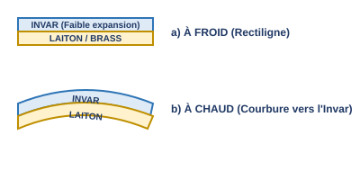
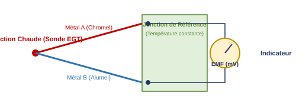

1. Introduction : Pourquoi mesurer les températures en vol ?
Le monitorage précis des températures à bord des aéronefs est fondamental à la fois pour la sécurité des vols, la performance aérodynamique et la protection des systèmes de propulsion.
1.1. Températures de l'air extérieur (OAT / TAT)
- Évitement des conditions de givrage : La détection des zones de givrage potentiel dépend directement de la température de l'air extérieur combinée à la présence d'humidité visible.
- Calcul de la densité de l'air : La masse volumique de l'air influence directement la poussée ou la puissance délivrée par les moteurs, ainsi que la fidélité des calculs de vitesse vraie (TAS) et la correction des erreurs altimétriques.
1.2. Températures des servitudes et des moteurs
Les paramètres thermiques des fluides et des composants mécaniques ou électroniques sont surveillés en permanence afin d'éviter toute défaillance critique :
- Groupe motopropulseur (Moteur à pistons et Turbomachines) : Suivi des gaz d'échappement (EGT) et des têtes de cylindres (Cylinder Head Temperature - CHT).
- Fluides vitaux : Températures des circuits de lubrification (Huile) et des réservoirs/circuits de carburant (détection du figeage).
- Systèmes de servitude : Équipements de bord avioniques/électroniques et température de l'air de conditionnement de la cabine.
2. Unités de mesure et conversions réglementaires
Trois échelles de température sont utilisées de manière interchangeable selon l'origine réglementaire ou le domaine technique (conception américaine, européenne ou thermodynamique pure).
Note d'examen : Le coefficient 1,8 équivaut exactement à la fraction 9/5.
L'atmosphère standard OACI (ISA - International Standard Atmosphere) définit des valeurs de référence indispensables au niveau de la mer (MSL) :
3. Typologie des capteurs de température
Les capteurs tirent parti de la modification des caractéristiques physiques des matériaux (dilatation volumique ou variation des propriétés électriques) sous l'effet de l'agitation thermique.
3.1. Capteurs mécaniques par expansion (Plage de -100 °C à +350 °C)
Ces technologies mécaniques autonomes n'exigent généralement pas d'alimentation électrique et équipent principalement l'aviation légère d'entraînement ou les instruments de secours.
A. Capteurs bimétalliques (Bilames)
Ils exploitent la juxtaposition de deux métaux possédant des coefficients de dilatation thermique linéique distincts (typiquement l'Invar, qui ne réagit presque pas, associé au Laiton/Brass, fortement dilatable). Sous l'effet de la température, l'ensemble fléchit du côté du métal ayant le plus faible coefficient.

Pour augmenter la course de déplacement et piloter directement une aiguille d'affichage sans jeu mécanique excessif, le bilame est enroulé sous la forme d'une hélice bimétallique logée dans un doigt de gant protecteur.
B. Capteurs à tension de vapeur (Pression de vapeur)
Un bulbe scellé renferme un liquide volatil. Lorsque la température augmente, une partie du liquide subit un changement d'état et se transforme en vapeur. L'élévation consécutive de la pression interne est acheminée via un tube capillaire vers un mécanisme de type tube de Bourdon, traduisant ainsi une pression en une lecture directe de température.
3.2. Capteurs de type électrique et électronique
Plus précis, dynamiques et aptes à transmettre les données à de longues distances vers des calculateurs (FADEC, EFIS), ils dominent l'aviation commerciale.
A. Sondes à résistance électrique (Plage de -200 °C à +850 °C)
Également appelées "Thermomètres à bulbe de résistance", elles reposent sur le principe que la résistance électrique d'un conducteur métallique (souvent du platine, technologie Pt100) varie de façon linéaire avec la température. La mesure de la variation de tension ou de courant permet d'isoler précisément la température mesurée.
B. Thermocouples / Sondes thermoélectriques (Plage de -200 °C à +2000 °C)
Essentiels pour les environnements à très haute sollicitation thermique (EGT des turboréacteurs et CHT des moteurs à pistons). Le principe repose sur l'Effet Seebeck : deux métaux de natures différentes (généralement le couple Chromel / Alumel) connectés à leurs extrémités génèrent une force électromotrice (EMF) proportionnelle à la différence de température existant entre la jonction de mesure (jonction chaude) et la jonction de référence (jonction froide).

4. Affichages et codification couleur des cadrans
Qu'il s'agisse de cadrans analogiques ou de dalles numériques d'ECAM/EICAS, les indicateurs de température respectent un code couleur strict défini par les certifications de navigabilité (CS-25 / FAR-25) :
| Couleur de l'arc / secteur | Signification opérationnelle | Exemple d'application |
|---|---|---|
| Vert | Plage de fonctionnement normal | Plage nominale d'utilisation de l'huile moteur |
| Blanc | Plage d'exploitation spécifique / particulière | Procédures ou configurations restreintes |
| Ambre / Jaune | Plage exceptionnelle / Zone de préalerte (Caution) | Surchauffe transitoire autorisée avec limitation de temps |
| Rouge | Limites minimales ou maximales absolues (Danger) | EGT maximale autorisée avant dommages structuraux |